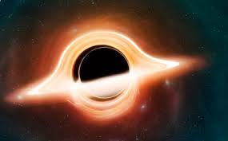
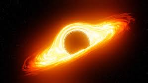

Un agujero negro es una región del espacio con una gravedad tan intensa que nada, ni siquiera la luz, puede escapar de ella. Se forman cuando una estrella masiva colapsa al final de su vida y su importancia en el universo radica en su papel crucial en la formación de galaxias, la evolución estelar y la manipulación de la materia circundante.

Formación de Agujeros Negros
Los agujeros negros se forman a partir de estrellas masivas cuando agotan su combustible nuclear, provocando que el núcleo colapse bajo su propio peso. Si la masa del núcleo restante es lo suficientemente grande (al menos tres veces la masa del Sol), la gravedad es tan fuerte que comprime la materia hasta formar un objeto increíblemente denso y con una gravedad tan intensa que nada, ni siquiera la luz, puede escapar. Este colapso a menudo desencadena una explosión de supernova, que expulsa las capas exteriores de la estrella.
Proceso de formación
Agotamiento del combustible: Una estrella masiva (con una masa de al menos 20 veces la del Sol) fusiona elementos en su núcleo, produciendo energía que equilibra la fuerza de gravedad. Cuando agota el combustible, este proceso de fusión cesa.
Colapso gravitacional: Sin la presión hacia afuera generada por la fusión nuclear, la gravedad de la propia estrella hace que su núcleo colapse hacia adentro de manera violenta.
Supernova: El colapso del núcleo provoca una onda de choque que expulsa las capas externas de la estrella al espacio en una explosión masiva conocida como supernova.
Formación del agujero negro: Lo que queda del núcleo, si es lo suficientemente masivo, continúa colapsando. La fuerza gravitacional es tan extrema que ninguna otra fuerza puede detener la compresión, y la materia se comprime en un punto de densidad infinita (singularidad), creando un agujero negro.

Tipos de Agujeros Negros
Los tipos principales de agujeros negros son los estelares (formados por el colapso de estrellas masivas, con una masa de unas pocas a docenas de veces la del Sol) y los supermasivos (ubicados en el centro de las galaxias, con masas de millones o miles de millones de veces la del Sol). Otro tipo propuesto, aunque menos confirmado, es el de masa intermedia, con una masa entre 100 y un millón de veces la del Sol.
Tipos de agujeros negros según su masa
Agujeros negros estelares:
Se forman cuando una estrella muy masiva agota su combustible nuclear y colapsa bajo su propia gravedad, explotando como una supernova.
Su masa es típicamente de tres a cien veces la masa del Sol.
Se pueden encontrar en el centro de las galaxias o como objetos individuales.
Agujeros negros supermasivos:
Se encuentran en el centro de la mayoría de las galaxias, incluida la nuestra, la Vía Láctea, donde se encuentra Sagitario A*.
Tienen masas de millones a miles de millones de veces la del Sol.
Su origen no se conoce completamente, pero una teoría sugiere que se forman de la combinación de agujeros negros estelares.
Agujeros negros de masa intermedia (IMBH):
Este tipo de agujero negro tiene una masa entre 100 y un millón de veces la del Sol.
No se ha detectado de forma concluyente como los otros dos tipos principales.
Micro agujeros negros:
Son objetos hipotéticos y se especula que podrían haberse formado en el Big Bang.
Tendrían una masa menor que la del Sol.
Otros tipos
Los agujeros negros también se pueden clasificar según sus propiedades de carga y rotación, como describe la tabla de Wikipedia:
Agujeros negros de Schwarzschild: Estáticos y sin carga eléctrica.
Agujeros negros de Kerr: Giratorios y sin carga eléctrica.
Agujeros negros de Reissner-Nordström: Estáticos y con carga eléctrica.
Agujeros negros de Kerr-Newman: Giratorios y con carga eléctrica.
Los tipos más comunes en el universo son los agujeros negros estelares y supermasivos que giran (de Kerr) y no tienen carga neta.
Agujeros negros estelares
Agujeros negros supermasivos
Agujeros negros intermedios
Características Principales
El horizonte de sucesos es la frontera de un agujero negro más allá de la cual nada, ni siquiera la luz, puede escapar de su gravedad. La singularidad es el punto central y teórico de masa infinitamente densa de un agujero negro, mientras que el horizonte de sucesos es la superficie exterior que lo rodea. La única diferencia entre ambos es la interacción con la gravedad del agujero negro. .
Los agujeros negros interactúan con su entorno principalmente a través de su poderosa gravedad, que atrae materia hacia ellos creando discos de acreción que emiten rayos X, y expulsando jets de gas (vientos) que pueden influir en la formación de estrellas en la galaxia. También se observan interacciones en sistemas binarios de agujeros negros que emiten ondas gravitacionales. Su influencia puede extenderse más allá de la atracción gravitatoria directa, regulando la formación de estrellas en toda la galaxia
Los agujeros negros interactúan con la materia y la luz de dos maneras principales: atrapando todo lo que cruza su horizonte de sucesos, incluida la luz, y desviando la luz y la materia que pasan cerca mediante su intensa gravedad. Esto crea efectos observables como discos de acreción que emiten luz y la distorsión de la luz de fondo, conocida como lente gravitacional.
Interacción con la materia
Atrapamiento: La materia que se acerca demasiado a un agujero negro es atraída por su gravedad y cae hacia él, cruzando el horizonte de sucesos. Una vez dentro, la materia se pierde para siempre y se presume que cae hacia la singularidad central.
Formación de discos de acreción: La materia que no cae directamente forma un disco en espiral alrededor del agujero negro, llamado disco de acreción. La fricción y las fuerzas gravitatorias calientan este material a millones de grados, haciendo que emita radiación intensa (como rayos X) que los astrónomos pueden detectar.
Emisión de chorros: Algunos agujeros negros supermasivos expulsan potentes chorros de materia y energía hacia el exterior, que pueden ser detectados por las emisiones de radio. .